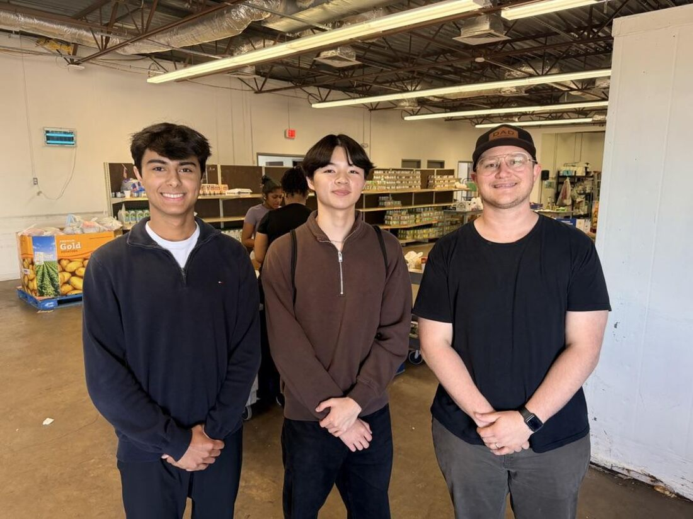
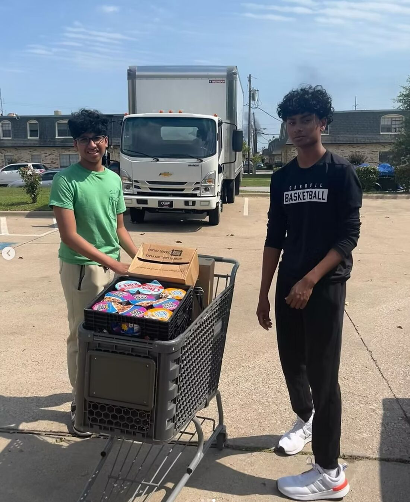
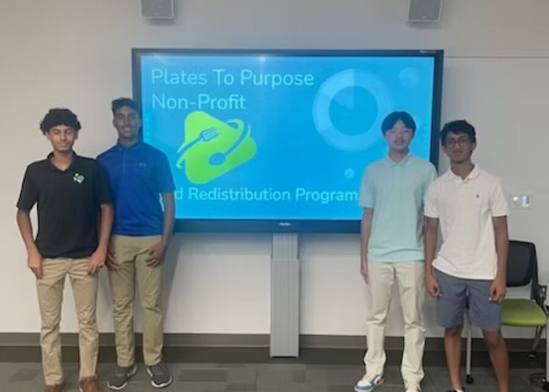
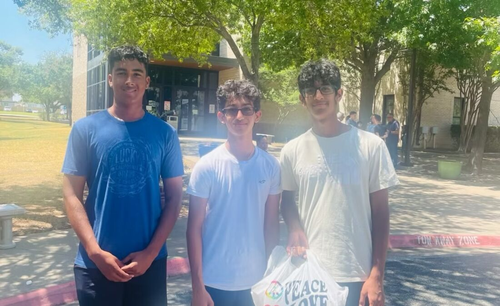

Our Impact
Every pickup adds up
We track every donation — the food source, the amount, and the receiving organization. Here’s a look at that work in action across the community.
In the Field
What food rescue looks like
From pickups and deliveries to kitchens and community events — here’s our work in action.










Be part of the next number
Every volunteer shift and every donation moves these numbers forward.
Get Involved